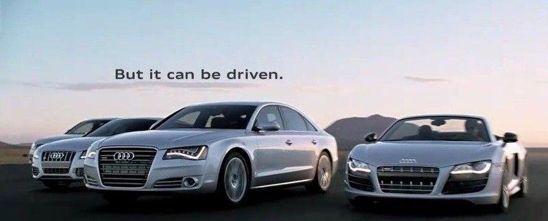
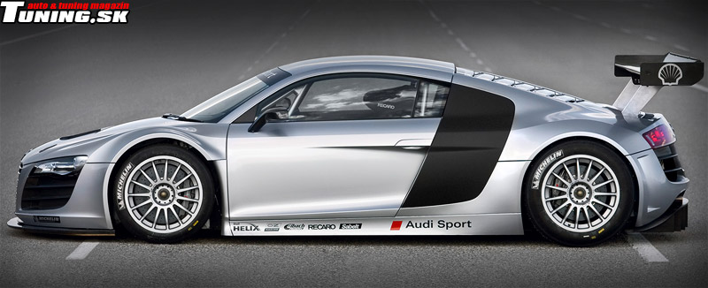

Audi AG — немецкая автомобилестроительная компания в составе концерна Volkswagen Group, специализирующаяся на выпуске автомобилей под маркой Audi. Штаб-квартира — в Ингольштадте (Германия). Председатель совета директоров — Мартин Винтеркорн (Martin Winterkorn). Объём производства в 2010 году составил около 1 148 791 автомобилей (рост на 23,4 % по сравнению с 2009 годом). В 2012 году немецкие специалисты по автомобилям сделали рейтинг лучших подержанных авто. Авто марки Audi признали лучшей среди подержанных авто.
